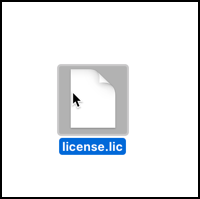
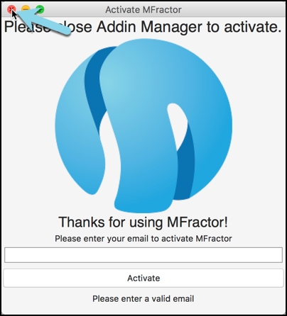

Installation And Setup
Installing, activating and updating MFractor for Visual Studio Mac
Install MFractor
To install MFractor, start Visual Studio for Mac.
Next, navigate to the top left Visual Studio Menu and select Extensions.
Next, click on the Gallery tab and under IDE Extensions choose MFractor.
Activating MFractor
When you first install MFractor, the activation dialog will open shortly after installation.
In the activation dialog, enter your email and then click Activate.

Tada! You are now ready to rock.
Importing An MFractor Professional License
Download and locate your license file (which ends with the extension .lic). When purchasing MFractor Professional, this license file will be provided in an email. In this example, our license file is located on our desktop called license.lic.

Open Visual Studio for Mac. If you have not activated MFractor with an email address, close the activation window.

In the main Visual Studio for Mac menu bar, select Help, then MFractor and then finally License Information. This will open the licensing window where you can import or remove an MFractor Professional license.
Next, click on the Import License button, browse to where our license is located (license.lic) and double click it to import the license into MFractor.

Voila, you now have a valid, active MFractor Professional installation.
It is safe to delete the license file from its original location. MFractor stores the license inside itself.

The licensing window will list:
- Licensed To - The full name of the person that the MFractor Professional license is issued to.
- License Email: - The email that this MFractor Professional license is issued against.
- License Type and Expiry Date - The type of license issued (Professional, Trial or Lite) and when that license expires.
Deactivating Your Professional License
If you'd like to remove a license from MFractor, you can open the MFractor license information window and click Remove License.
IMPORTANT: This is a destructive operation, you cannot undo removing a license but you can re-import a new license.
After removing a license, you will be automatically downgraded to a free MFractor license. This allows usage of most features apart from C# code actions, mobile-specific C# code diagnostics, and configuration file support.
Updating MFractor
MFractor will perdiocally notify you when an update is available.
You can also check for updates at any time by opening the Visual Studio Mac main menu and selecting Check for Updates...

Visual Studio Mac will check the MFractor extension server for updates and prompt you to update if there is a new version!
Uninstalling MFractor
You can uninstall MFractor through the Extension Manager at any time.
Select the Visual Studio Mac main menu and then Addins
Under Gallery then IDE extensions select the MFractor extension list item and then click Uninstall
You will be prompted to uninstall the extension, confirm uninstallation by clicking Uninstall